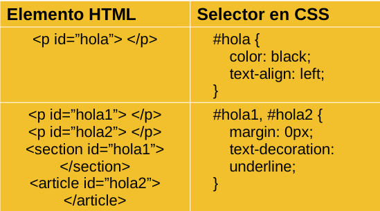

Taller de Programación Web
por
Ivan Robles

Volver al Índice
Esta obra está bajo una Licencia Creative Commons Atribución-CompartirIgual 4.0 Internacional
02Bases Web HTML, CSS y Javascript
Vamos a abordar el aspecto técnico acerca de las tecnologías que involucran las páginas web
HTML
...es un lenguaje de marcado que define la estructura del contenido. HTML consiste en una serie de elementos que se utilizan para encerrar, o envolver, diferentes partes del contenido para que aparezca de una manera determinada, o actúe de una manera determinada.
En la versión HTML5, también ha adquirido una estructura semántica, y cada vez menos de estilo (que se deja para CSS)
- Presentado en 1991 por Tim Berners-Lee y lanzado en 1993
- Basa su sintaxis en etiquetas, que son corchetes angulares ( < > ) que contienen a cada “elemento”
- La última versión estable es la del 21 de Enero 2022
- Globales
- Metadatos
- Secciones
- Agrupaciones
- Semántica Nivel Texto
- Contenido embebido y Multimedia
- Formularios
- Scripts
Globales
<html> (document) Básicamente representa al DOM, contiene todo en un documento HTML Contenido: Elemento <head> seguido de un <body> OBLIGATORIO
Atributos Globales
Se aplican a todo elemento, por lo que pueden o no tener un efecto
|
|
|
Metadatos
- <head> contiene los siguientes elementos de metadatos y siempre está después de <html> y antes de <body> OBLIGATORIO.
- <title> Representa de manera formal el nombre del documento, así mismo da contexto al documento (aparece en la pestaña del navegador).
- <base/> Sirve para establecer una URL base para las direcciones relativas en el documento.
- <link/> Representa enlaces a otros recursos a ser empleados por el documento actual, normalmente lo utilizaremos para enlazar documentos CSS de estilo.
- <meta/> “...representa varios tipos de metadatos que no pueden expresarse mediante los elementos title, base, link, style y script.” útil para SEO y el charset en el navegador por ejemplo.
- <style> Sirve para incluir reglas CSS DENTRO del documento actual.
Secciones
- <body> Representa y contiene a todos los contenidos del documento, todos los elementos visuales se encuentran aquí.
- <article> “...representa una composición auto-contenida en un documento, página, una aplicación o en el sitio...[como] un mensaje en un foro, un artículo de una revista o un periódico, una entrada de blog, un comentario de un usuario, un widget interactivo o gadget
- <section> “...representa una sección genérica de un documento. Sirve para determinar qué contenido corresponde a qué parte de un esquema...omo en el índice de contenido de un libro; un tema común y subsecciones relacionadas.”
- <nav> “...representa una sección de una página cuyo propósito es proporcionar enlaces de navegación, ya sea dentro del documento actual o a otros documentos.”
- <aside> “... representa una sección de una página que consiste en contenido que está indirectamente relacionado con el contenido principal del documento.” como glosarios, publicidad, una biografía, etc. HTML5
Agrupaciones
- <p> Representa un párrafo.
- <hr/> Representa un cambio de tema por una línea continua
- <pre> Contiene un bloque de texto preformateado (respetando cada espacio y línea en blanco)
- <blockquote> Representa una sección citada de otra fuente.
- <ol> Representa una lista ordenada y numerada que contiene elementos <li>
- <ul> Representa una lista desordenada que contiene elementos <li>
Semántica Nivel Texto
- <a> “...crea un enlace a otras páginas de internet, archivos o ubicaciones dentro de la misma página, direcciones de correo, o cualquier otra URL.”
- <abbr> “...representa una abreviación o acrónimo.”
- <b> “b de bold=negrita.”
- <code> Elemento que contiene algún tipo de código fuente.
- <data> “...vincula un contenido dado con una traducción legible por una máquina.” Ej.: <p><data value="3967381398">Mini Ketchup</data></p>
- <br/> Salto de línea
Contenido Embebido y Multimedia
- <iframe> “...(de inline frame) representa un contexto de navegación anidado, el cual permite incrustrar otra página HTML en la página actual.”
- <object> “... representa un recurso externo, que puede ser tratado como una imagen, un contexto de navegación anidado, o como un recurso que debe ser manejado por un plugin.” como para leer un documento PDF dentro del navegador con el lector integrado.”
- <param/> Define parámetros para elementos invocados por <object>
- <picture> “...es un contenedor usado para especificar múltiples elementos <source> y un elemento <img> contenido en él para proveer versiones de una imagen para diferentes escenarios de dispositivos.”
Formularios
- <form> “...representa una sección de un documento que contiene controles interactivos que permiten a un usuario enviar información a un servidor web.”
- <input> Elemento interactivo que sirve para que el usuario introduzca uno de varios tipos de datos permitidos (tal vez una de las etiquetas más complejas)
- <button> Representa un objecto para hacer click empleado en formularios para varios propósitos (enviar formulario, borrar datos ingresados, etc.) incluso tiene usos meramente de presentación en la página web como parte de la UI.
- <label> Representa un texto descriptivo para algún <input> o <button> en el formulario.
- <textarea> “...representa un control de edición de texto plano de varias líneas, útil cuando se desea permitir a los usuarios introducir una cantidad considerable de texto de forma libre, por ejemplo, un comentario en un formulario de revisión o retroalimentación.”
Scripts
- <script> Se usa para insertar (embeber) un script o hacer referencia a un archivo de script
- <canvas> Se emplea para renderizar dibujos por código (JS), composiciones en fotos o animaciones
- <noscript> Contiene contenido que se muestra si los elementos <script> no se pueden ejecutar (como desactivando los scripts en el navegador)
Estructura del código fuente HTML
Estructura Semántica de HTML
DOM (Document Object Model)
El DOM es un modelo de documento [y la API] que se carga en el navegador web y que representa el documento como un árbol de nodos [elementos HTML], en donde cada nodo representa una parte del documento (puede tratarse de un elemento, una cadena de texto o un comentario).
Estructura y Jerarquía del DOM
Herramientas para HTML
Debido a que HTML es un lenguaje de marcado con muchos años de existencia y muchas compañías de software han querido imponer sus propias formas de interpretearlo, hay ciertas cosas que podemos hacer para minimizar estos inconvenientes e incluso optmizar nuestro tiempo de desarrollo de codificación como programadores del sitio
Sitio: Can I use ?
Este sitio es muy útil y práctico, ya que permite verificar qué funciones o características se pueden usar en determinadas versiones de navegadores (según las necesidades y plataformas usadas) tanto de Computadora como en Smartphones: https://caniuse.com
Sitio: <HTML.am>
Este sitio viene con muchas herramientas para novatos o inexpertos de una manera sencilla y amigable, unas de sus utilidades más destacables es su edtor de HTML WYSIWYG (What You See Is What You Get) las tablas de caracteres especiales en HTML y las plantillas en HTML vanilla que ofrece: https://www.html.am/templates/
Sitio: MDN Web Docs
Es considerado una de las fuentes más confiables de información para Desarrolladores Web en el mundo, aunque el navegador de Mozilla sigue siendo usado por una minoría (Firefox), la mayor parte del contenido está traducido en Español, vienen desde referencias de tecnologías HTML,CSS y JS así como tutoriales, guías y recomendaciones: https://developer.mozilla.org/es/
Sitio: W3C Markup Validation Service
Es un sitio que permite verificar si un archivo .html está correctamente redactado y su sintaxis es correcta de acuerdo al estándar (aunque no se cumplan con las reglas o haya errores en el HTML, el sitio se renderizará de todas formas debido a a robustez de los motores web actuales): https://validator.w3.org/
Sitio: HTML minifier
Es un sitio hecho en github, cuya función es la minimizar el tamaño de los archivos .html que escribamos o subamos al sitio, esto es bastante útil ya que uno de los retos que siempre se enfrentan es la de la velocidad de carga de los sitios en internet
IDE: Atom
Es un editor de texto creado para ser usado con Git y Github por default, es muy versátil y tiene multitud de plugins y extensiones muy útiles por parte de la comunidad y es multiplataforma: https://atom.io/
IDE: Visual Studio Code (VSCodium)
Es un editor de código e IDE creado por Microsoft, tiene buen redimiento, es de uso general y al igual que Atom tiene muchos plugins y extensiones disponibles gracias a su gran comunidad: https://code.visualstudio.com/
Extensión: Emmet
Tal vez sea uno de los plugins más extendidos y usados en la programación de páginas Web, permite escribir código HTML de manera mucho más ágil y veloz y está soportado por varios editores de código actualmente (incluso por algunos editores Online): https://emmet.io/
Online IDE: CodeSandbox
Es uno de los mejores editores de código en línea de HTML/CSS/Javascript y es de uso gratuito, tiene integración con Github además de que enfocado al desarrollo de páginas web teniendo multitud de plantillas con distintos Frameworks, recomendado: https://codesandbox.io/
IDE Híbrido: Theia
Es un editor Online cuyo backend y frontend están claramente separados, es muy flexible ya que la interfaz se ejecuta en el lado del navegador, pero el backend puede estar en la nube o incluso en la máquina local, lo que habilita enorme flexibilidad aunando que es Software Open Source y Gratuito, además de que declara tener más modularidad para personalizaciones: https://theia-ide.org/
Snippets Online: Codepen
Es una plataforma para subir snippets (pequeñas piezas de código) y compartirlos en otros sitios manera interactiva, es una herramienta muy completa, sobre todo para compartir código basado en HTML,CSS y JS: https://codepen.io/
Repositorio, Snippets, Código, CI&CD: Github
Es el sitio de repositorio de código fuente social más famoso del mundo, está diseñado para su uso gratuito, público , privado y empresarial, hay muchísimos sitios, código fuente de todo tipo de tecnologías y lenguajes de programación donde talentosos programadores comparten su software con el mundo
CSS (Cascade Style Sheet)
CSS (hojas de estilo en cascada), describe cómo deben mostrarse los elementos HTML en la pantalla, en el papel o en otros medios. Ahorra mucho trabajo. Puede controlar el diseño de varias páginas web a la vez. Las hojas de estilo externas se almacenan en archivos CSS
-(Traducido) CSS Introduction, URL: https://www.w3schools.com/css/css_intro.asp
Historia de CSS
- Propuesto como tal en el ‘94 por el colega de Tim Berners-Lee: Hakon Wium Lie
- Podría decirse que las hojas de estilos existen desde los 80’s aplicado a SGML
- Hasta el momento la última versión es la del 2015
- NO ES UN LENGUAJE DE PROGRAMACIÓN
Sintaxis y partes básicas de CSS
Selectores
- Simples: Selecciona por nombre, ID o clase del o los elementos
- Combinados: Selecciona elementos basado en su relación
- Pseudo-clases: Selecciona elementos en un determinado estado
- Pseudo-elementos: Selecciona parte de los elementos
- Atributos: Selecciona por atributo de los elementos HTML
Selectores Simples
Nombre: Simplemente el nombre del elemento HTML
Selectores Simples
ID: Todo elemento HTML cuyo atributo “id” sea el indicado en CSS

Selectores Simples
Clase: Todo elemento HTML cuyo atributo “class” sea el indicado en CSS
Selectores Combinados
Descendant: Se define como varios selectores unidos por un simple espacio en blanco, los cuales estan anidados de izquierda a derecha (no importa si hay otros elementos en medio)
Selectores Combinados
Child: Se indica con “mayor que” “>” y selecciona el 2do elemento inmediatamente anidado en el 1ro
Selectores Combinados
Adjacent Sibling: “Hermano Adyacente” Se indica con signo de “más” “+” y selecciona el 2do elemento si el primero si antes está inmediatamente después del 1ro
Selectores Combinados
General Sibling: “Hermano Genérico”Se indica con signo “tilde” “~” y selecciona los elementos dentro del padre después del primero
Pseudoclases
Son compañeros de todos los Selectores previos no son elementos ni atributos,representan un estado que puede ser resultado de algún evento en la página:
Ejemplos:
p:last-child { color:green }
a:hover { background-color:red }
Pseudoclases
Pseudoclases
Pseudoclases
Pseudoelementos
(Representan estados en algún momento dado o posición también)
Atributos en Selectores
Box Model en CSS
Maneras de Integrar CSS en HTML (externo)
Maneras de Integrar CSS en HTML (interno)
Maneras de Integrar CSS en HTML (inline)
Media Query
Se refiere al Medio y características del Viewport (que es el polígono donde se renderizan finalmente los elementos HTML del documento)
- Printer (Impresora)
- Screen (Pantallas, más común)
- Speech (para sintetizadores de voz para casos de personas invidentes, por ejemplo)
- All (todos los medios disponibles y aplicables)
normalmente se usa esta etiqueta Meta al principio del documento HTML, ayuda sobre todo al desarrollo de sitios mobile friendly
<meta name="viewport"
content="width=device-width,
initial-scale=1.0,
maximum-scale=1.0"/>
Especificidad en CSS
Es un cálculo que se realiza para decidir qué regla CSS aplicar cuando los mismos elementos HTML están siendo señalados por varias reglas CSS en el documento. Y si las reglas en conflicto suman lo mismo: Se aplica la última en ser declarada.
Animaciones en CSS
See the Pen CSSAnimation: Logo Animation, multi animation by Joan Leon (@nucliweb) on CodePen.
Herramientas en CSS
Sitio: Code Beautify
Es un sitio que tiene varias utilidades para la verificación de CSS incluso para hacer traducción (transpilación) desde y hacia dialectos como SCSS, LESS y SASS: https://codebeautify.org/css-tools
Sitio: Coolors
Es un sitio con muchas utilidades para escoger paletas de colores personalizadas o en tendencia, siempre de manera armónica: https://coolors.co/palettes/trending
Sitio: Khroma
Es un sitio que permite escoger paletas de colores haciendo uso de una IA: http://khroma.co/
Sitio: Free-CSS
Es un sitio con templates de sitios y estilos CSS: https://www.free-css.com/
Javascript
...es un lenguaje de programación ligero, interpretado, o compilado justo-a-tiempo (just-in-time) con funciones de primera clase... es un lenguaje de programación basada en prototipos, multiparadigma, de un solo hilo, dinámico, con soporte para programación orientada a objetos, imperativa y declarativa...
-MDN Web Docs, Javascript, https://developer.mozilla.org/es/docs/Web/JavaScript
- Creado por Brendan Eich, Lanzado el 4 de diciembre de 1995.
- Nombrado así por razones de marketing, no está directamente relacionado con el lenguaje de programación Java.
- Fue creado para dar interactividad a las páginas web.
Detalles acerca de Javascript
- Ha tenido bastantes problemas de compatibilidad entre navegadores, los cuales crean sus propios dialectos, con sus propios motores intérpretes.
- A fin de estandarizar Javascript (JS), en el ‘97 la European Computer Manufacturers Association (ECMA) propusieron una especificación de Javascript estándar el cual recibe el nombre de ECMAScript (ES) la cual ha sido desde entonces un referente de la versión “vanilla” de Javascript que usamos.
Por lo tanto:
Javascript es una implementación de ECMAScript
A partir de la versión ES2015 se han implementado muchos cambios haciendolo incompatible con versiones anteriores
Una solución ha sido emplear un Transpiler llamado BABEL el cual traduce las características y sintaxis nuevas de ES2015 a versiones compatibles con el navegador en uso que no aún no implementan los nuevos estándares.
En resumen: podemos usar esta herramienta ampliamente conocida por la comunidad para emplear las versiones más nuevas de Javascript asegurando compatibilidad.
Consideramos que JS es un lenguaje de programación ya que cuenta con los siguientes elementos
- Conjunto de símbolos (palabras reservadas)
- Sintaxis y reglas propias.
- Hace uso de Variables y Vectores (o Arrays)
- Funciones
- Estructuras Condicionales
- Bucles o ciclos de repetición
Palabras Reservadas:
- arguments
- await
- break
- case
- catch
- class
- const
- continue
- debugger
- default
- delete
- do
- else
- enum
- eval
- export
- extends
- false
- finally
- for
- function
- if
- implements
- import
- super
- switch
- this
- throw
- true
- try
- typeof
- var
- void
- while
- with
- yield
Tipos de Datos Primitivos en JS:
- undefined
- boolean
- number
- string
- bigint
- symbol
- object
- null (desciende de object)
- function
Operadores
Son algunas palabras o signos reservados que tienen una funcionalidad incorporada usados en sentencias Javascript
- Suma +
- Resta -
- División /
- Multiplicación *
- Módulo %
- Exponenciador **
- && AND
- || OR
- delete
- void
- typeof
- + (convierte operando a 'number')
- ! (NOT lógico)
Son anotaciones dentro del código fuente que permiten entender el programa y lo que hace, sirve para los desarrolladores y no influye en nada al funcionamiento del programa final.
//comentario de una línea
sentencia
/* Comentario
de
varias
líneas */
Dentro de las ciencias de la computación: Un programa es una serie de instrucciones a ser ejecutadas por una computadora. En este contexto, cada instrucción es una sentencia (statement). En Javascript cada sentencia es separada por un punto y coma ( ; )
let a,b,c ; // declaración de 3 variables
a = 1; // asignación de valor 1 a la variable a
b = “hello”; // asignación de valor “hello’ a la variable b
c = a; // asignación del valor de la variable a a la variable c
Un Bloque es un conjunto de cero o más sentencias demilitado por un par de llaves {}. Hay varios tipos de bloques en Javascript, como lo son los de Control de Flujo, Iteraciones, Funciones y otros.
if ... else
Permite ejecutar un bloque de sentencias si las condiciones a evaluar son verdaderas.
if (a > 0) {
result = 'positive';
} else {
result = 'NOT positive';
}
switch ... case
Evalúa una expresión comparándola con los los valores en las sentencias case y al final teniendo una sentencia default que se usa normalmente para ejecutarse en caso de no tener ningún valor igual a ninguna sentencia case anterior.
const expresion = 'galletas';
switch (expresion) {
case 'Pan Dulce':
console.log('No, es pan dulce');
break;
case 'Mangos':
console.log('No, son mangos');
break;
case 'galletas':
console.log('Sí, son galletas');
break;
default:
console.log(`No era nada de lo anterior`);
}
for
Son sentencias que, permiten repetir un número indicado de veces un bloque evaluando una expresión.
/* Crea un ciclo (o bucle) que consiste en 3 expresiones
(opcionales) entre paréntesis seguido de una sentencia o un
bloque de ellas.*/
for (let i=0 ; i < 5 ; i++ ) {
console.log("Hola, la variable i vale: "+i );
}
Resultado:
Hola, la variable i vale: 0
Hola, la variable i vale: 1
Hola, la variable i vale: 2
Hola, la variable i vale: 3
Hola, la variable i vale: 4
while
Crea un ciclo ejecutando el bloque o sentencia indicado mientras la condición a evaluar sea igual a true. La condición siempre es evaluada antes de empezar el bloque
while
let i = 0;
while (i < 4) {
console.log("i vale: "+i );
i++;
}
Resultado
i vale: 0
i vale: 1
i vale: 2
i vale: 3
Toda función en Javascript es un objeto del tipo `function` que por cierto tiene las mismas propiedades de un Objeto Javascript (con mayúscula ya que JS es sensible a mayúsculas) se inicializan con la palabra reservada function.
function miPrimeraFuncion(arg1, arg2)
{
//varias sentencias...
return arg1 + arg2;
}
Es una manera de declarar y asignar al mismo tiempo una función a una variable, si se omite el nombre se convierte en una "función anónima"
let miFuncion = () => {
console.log(“hola, soy una expresión de función flecha
anónima”);}
(() => {console.log('¡Me inicié inmediatamente!')})();
Las variables son espacios de memoria que reservamos para guardar valores (datos) del tipo que sea mientras el programa es ejecutado. A la creación de variables en tu programa se le llama: 'declarar' una variable. Palabras reservadas para declarar una variable en Javascript:
- var
- let
- const
Comparación var, let , const
| var | let | const | |
| Redeclarable | ✅ | ❌ | ❌ |
| Reasignable | ✅ | ✅ | ❌ |
| Global | ✅ | ❌ | ❌ |
| Bloque | ❌ | ✅ | ✅ |
| Hoisted | ✅ | ❌ | ❌ |
Fuente: Nikita Hlopov's Frontend Dev Blog, 06/Oct/2021, Difference between var vs let vs const in JavaScript, Enlace: https://nikitahl.com/var-vs-let-vs-const
POO en Javascript
Como Javascript es un lenguaje Basado en Prototipos y Orientado a Objetos la manera en que se implementa es la siguiente partiendo de estos principios de la Programación Orientada a Objetos:
- Todos los Objetos provienen de una Clase de Objeto.
- Una Clase es como el "plano" o "plantilla" de lo que será un Objeto.
- Tienen las siguientes características: Herencia, Abstracción, Encapsulamiento, Polimorfismo, Garbage Collection.
- La palabra reservada para crear Objetos en Javascript es 'class'.
class Cuadro extends Poligono {
constructor(largo) {
super(largo);
this.name = 'Cuadro';
}
}
Arreglos
Un Arreglo (o Array) no es más que una lista de objetos o variables ordenada por su índice (orden actual) la cual tiene métodos para iterarla y realizar mutaciones en ella, puede cambiar de tamaño (número de elementos) y pueden ser elementos de cualquier tipo.
let unArreglo = [“hola”, 1, -99,
(n) => {return 0;}, [1,2] ] ;
FIN
InicioÍndice